professional experience
I have over 10+ years experience programming with a specialization in front end web development; a significant background in Python (Django, Flask) as well as recent experience with AngularJS. I am also capable of back end development, light design work, and UNIX server administration. Link to my Github profile.
Clients I have done work for include but are not limited to: Doubleday & Cartwright, Left Field Labs, Ignition Creative, Wemolab, HYFN, RED Interactive Agency, JPL, UCLA.
community involvement
Speaker at PyCon 2013 (Lessons Learned in Teaching Python), Pycon 2012 (Django Templating: More Than Just Blocks), DjangoCon 2011 (Best Practices for Front-End Django Developers), lighting talks at LA Django.
I was a founding member of PyLadies, a non-profit outreach program helping the Los Angeles as well as global Python programming community. I helped organize events, led and taught Python programming workshops, and also mentored students.
selected works
-
Google Atmosphere
Involved in front end development work of pages and features for Atmosphere Live / Google for Work. Project was developed in AngularJS with the Jade template engine, Stylus for CSS preprocessing, and CoffeeScript.
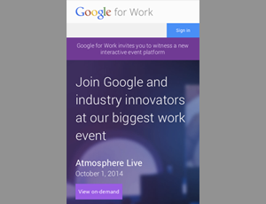Mobile landing page
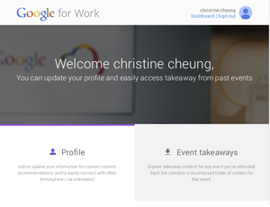Profile dashboard
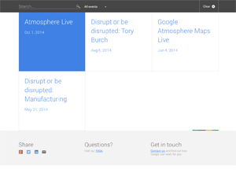Event search grid
-
Legends of OZ: Dorothy's Return
Front end web development (HTML, SCSS/CSS, JavaScript) for the animated film. Features include scalable full page video backgrounds, video and sound page transitions, integration with HTML5 game elements, responsive layout for tablet/mobile devices.
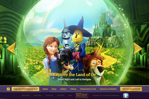Landing home page (initial load with video fade in)
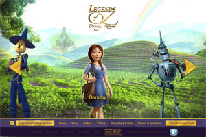Character carousel with detailed biographies upon click
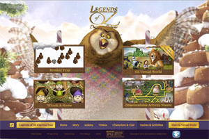Games page with HTML5 game elements in triggered modals
-
Charity Aware
Front end WordPress theme development with responsive layout for tablet and mobile devices.
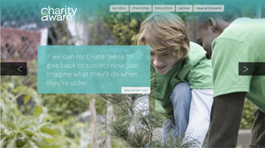Home page with sliding sections
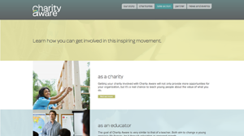Take Action page
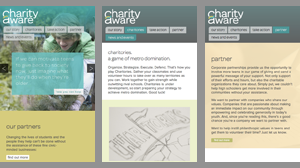Responsive mobile layout and menu
-
Parkland / archived version
Single page front end web development (HTML, SCSS/CSS, JavaScript) with responsive layout for tablet/mobile devices.
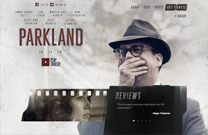Home page with video trailer modal and reviews carousel
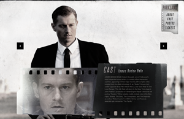Rotating cast sections, scroll past home page reveals sticky navigation
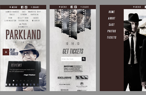Responsive mobile layout and menu
-
Trask Industries
Main collaborator on a team to build out the X-Men: Days of Future Past movie teaser site using AngularJS. Data and media pulled from JSON feeds. CSS3 transitions and responsive layout for tablet and mobile devices. 1M+ users and page visits.
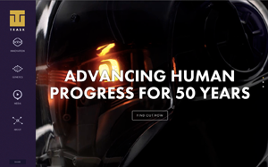Home page with looping video media
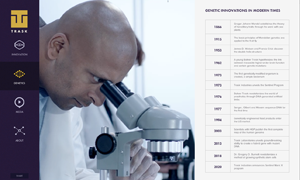Page transitions handled via AngularJS controller hooks
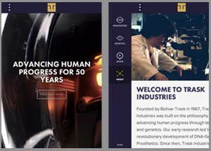Responsive mobile layout and menu
-
The Last of Us
Web development (HTML, SCSS/CSS, JavaScript, PHP) for the top selling action-adventure survival horror game. Features include age gate, social API integration, parallax scrolling. Responsive layout for tablet/mobile devices.
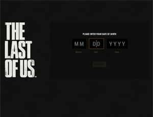Age gate logic (18+)
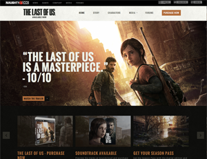Front page hero parallax, news carousels
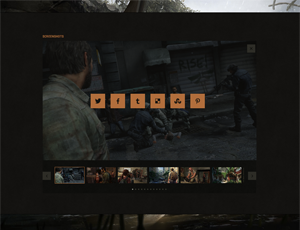Interactive media carousels with zoom (modal) and sharing functionality
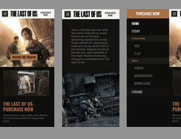Responsive mobile layout and menu
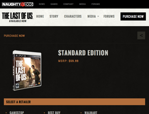Tablet layout of purchase page
-
Wittlebee / archived version
Front end development (HTML, SCSS/CSS, JavaScript) and Django template integration. Light back-end work in Python. Created and designed a front-end for a back office inventory management system for warehouse item pickers. Integrated with back-end inventory APIs via JSON.
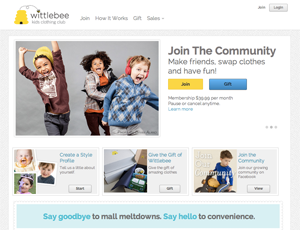Home page carousel with clean CSS buttons
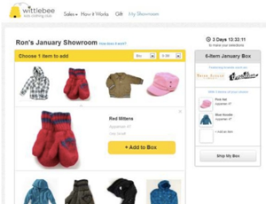Interactive shopping cart functionality with jQuery AJAX filtering and submit
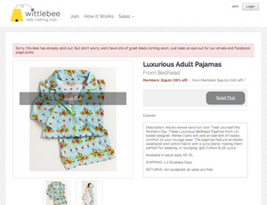One off sale page with image zooming
-
Scandalous Dirt / archived version
Front end development (HTML, SCSS/CSS, JavaScript) and Django template integration. Data pulled from JSON API feeds and visual interactions via jQuery.
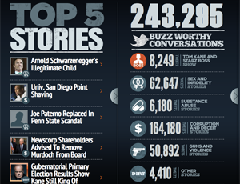Horizontal sliding panel layout
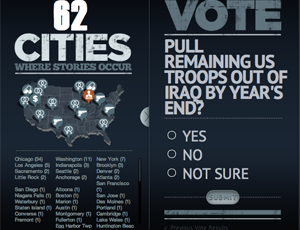Map data and voting functionality
-
HBO Connect / archived version
Front end development (HTML, SCSS/CSS, JavaScript) and Django template integration. Main features include live event polling and streaming Twitter feeds via jQuery. Winner of a 2012 Webby award (Television).
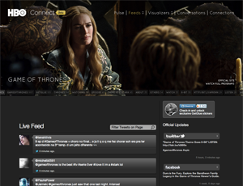Live filtered twitter feed and trending topics
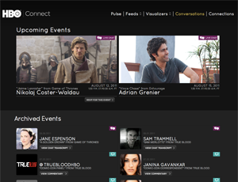Upcoming and archived event pages
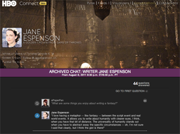Live event polling/updating of Q&A sessions
-
Kevin's BBQ Joints
Front end development (HTML, CSS, JavaScript) and back end Python development in Django. Main features include user registration and login, location search, restaurant listing pages, rating/reviewing functionality.
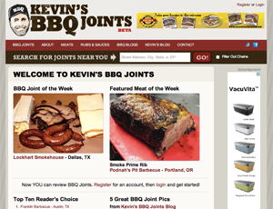Admin editable homepage
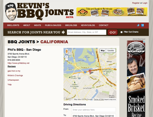Restaurant detail page with directions, reviews, and ratings
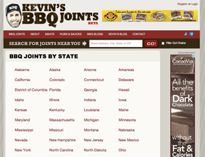Directory listing